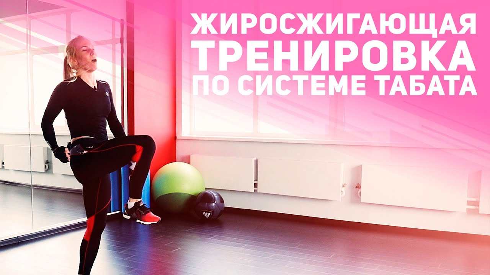
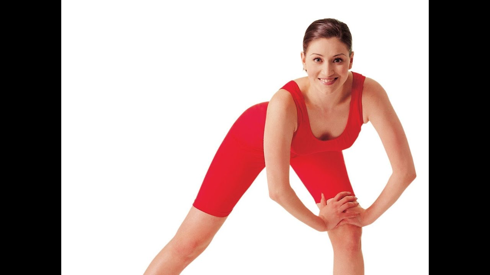
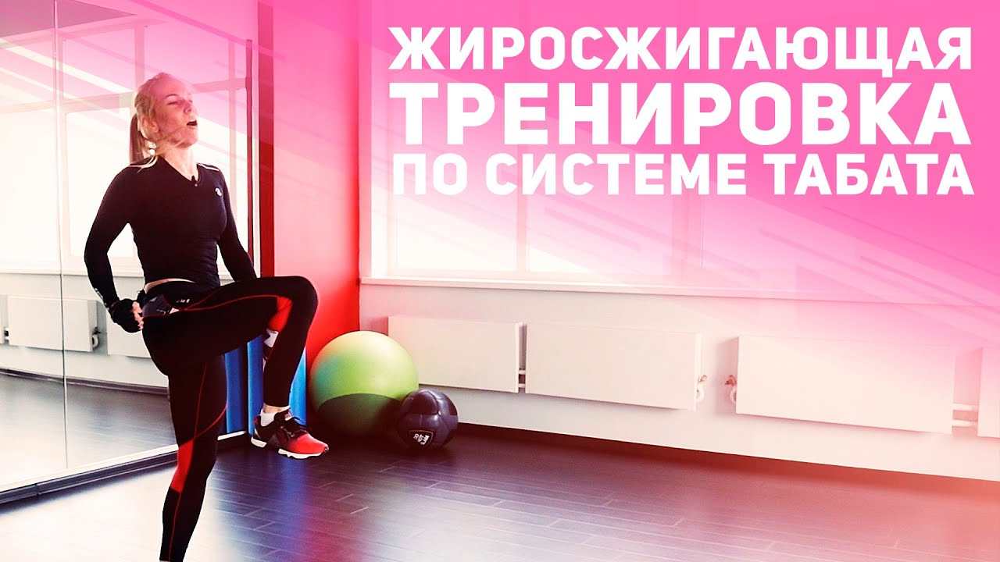
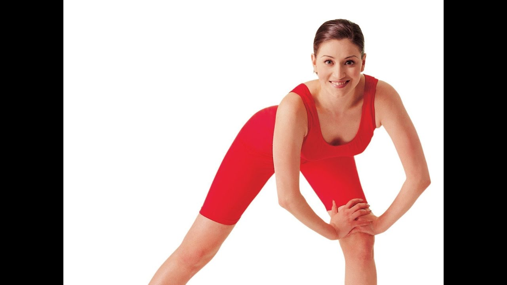

Най-добри фитнес гривни в България 2020 - Мнения, Цени, Оферти
2020.09.15 13:58
RevBul
Меню Дом и Градина Електроника Електроуреди Здраве и красота Ревюта Спорт Начало Електроника Най-добрите фитнес гривниНай-добрите фитнес гривни
ЕлектроникаЗаедно с успеха на смартфоните излизат все повече модели фитнес гривни с повече функции, които предоставят информация, която лесно се чете от смартфона. Но има и все повече смарт часовници с тъчскрийн, които имат процесор и разнообразни приложения, които служат и за проследяване на физическата активност под формата на спортни часовници.
Kомпании като Самсунг създават часовници с интегриран монитор за сърдечен ритъм, които имат същата функция от много време. Но хората стават все по-взискателни и търсят фитнес гривни и спортни часовници, от които да черпят повече ползи. В момента има голямо разнообразие от модели с много функции, от които да избирате. Това ръководство има за цел да покаже селекция от най-добрите фитнес гривни и спортни часовници с добро качество, независимо дали евтини или скъпи модели.
Сравнение на най-добрите фитнес гривни 1. Фитнес Гривна Xiaomi Mi Band 3 2. Фитнес Гривна Huawei Band 2 Pro 3. Фитнес гривна Xiaomi Mi Band 4 4. Фитнес гривна Samsung Gear Fit 2 Pro 5. Garmin Forerunner 235 HR 6. Фитнес гривна Fitbit Charge 3 7. Фитнес гривна Garmin Vivosmart 4 8. Часовник Smartwatch Fitbit Versa Lite 9. Часовник Smartwatch Polar M430 Как да свържем фитнес гривната? Кои са 5-те най-продавани фитнес гривни? Добри ли са евтините фитнес гривни? Каква фитнес гривна да купите?Сравнение на най-добрите фитнес гривни
По-долу можете да видите обобщени характеристиките на няколко модела, които са много добър избор за обикновения потребител. Ако искате часовник или гривна за по-конкретна употреба, можете да прочетете подробно описанията за всеки модел по-долу.
1. Фитнес Гривна Xiaomi Mi Band 3
Фитнес гривна Xiaomi Mi Band 3 Към ОфертатаОбновеният Mi Band 3 носи определени предимства пред Mi Band 2, като се започне с по-внимателен външен дизайн. Той има монохромен OLED сензорен екран с размери 128 × 80 пиксела. Според Xiaomi батерията позволява до 20 дни употреба, сдвоени с телефони Android 4.4 и следваща версия или iOS 9.0 версия и нагоре, чрез Bluetooth 4.2. Компанията е подобрила алгоритмите за проследяване на упражненията, като са я направили по-надеждна и точна, добавяйки подобрен крачкомер и сензор за сърдечен ритъм. Този модел фитнес гривна позволява следенето на всички видове упражнения, включително плуване, плюс известия за входящи разговори, информация за времето, водоустойчивост до 50 метра, изгорени калории и други.
2. Фитнес Гривна Huawei Band 2 Pro
Huawei Band 2 Pro Към ОфертатаBand 2 Pro от Huawei е фитнес гривна с всичко необходимо, за да следите всички видове упражнения. Тя включва функциите: GPS, Bluetooth за свързване с телефон, сърдечен ритъм, акселерометър и водоустойчивoст до 50 метра, така че може да се използва за бягане, плуване, броене на стъпки, следене на съня и още много други. Huawei отговаря за включването на необходимите приложения за всички видове упражнения, а информацията е достъпна чрез приложение за Android 4.4 и iOS 8.0 или по-нова версия. Разполага с батерия 100 mAh, която доставя енергия за използване до 21 дни и дисплей PMOLED. Това е най-прецизната фитнес гривна като съотношение цена / качество.
3. Фитнес гривна Xiaomi Mi Band 4
Xiaomi Mi Band 4 Към ОфертатаФитнес гривна Mi Band 4 от Xiaomi е с цветен 120 х 240 пиксела AMOLED дисплей, като производителя запази същия дизайн на Mi Band 3. Каишката на гривната може да се сваля, за да се смени с друг цвят по ваш избор. Това е водоустойчив модел с издръжливост до 50 метра, батерия 135mAh, която издържа до 20 дни.
Xiaomi подобрява дейностите, които ви позволяват да проследявате 6 режима на тренировка: бягаща пътека, упражнения, бягане на открито, плуване, колоездене, ходене, в допълнение към това ви позволява да проследявате съня си, показва известия или аларми. Това е много функционална и достъпна фитнес гривна.
4. Фитнес гривна Samsung Gear Fit 2 Pro
Фитнес гривна Samsung Gear Fit 2 Pro Към ОфертатаGear FIT2 Pro е фитнес гривна, която е подготвена за всички видове спортове. Оборудван с акселерометри, барометър и сензор за сърдечен пулс. Дизайнът му е лека и тясна гривна в сравнение със смарт часовниците на Samsung като Gear Sport, което го прави доминиращ с 1,5-инчовия си AMOLED екран с резолюция 216 х 432 пиксела.
Водоустойчив с поддържа до 50 метра дълбочина. По отношение на свързаността, Bluetooth, Wi-Fi и GPS. Батерията е 200 mAh, която издържа няколко дни нормална употреба или няколко часа употреба с GPS. Отнема около 90 минути, за да бъде напълно заредена използвайки USB 3.0.
Този модел не е смарт часовник, тъй като неговата функционалност е изцяло ориентирана към физическата активност, а изборът на приложения, които може да се инсталират на гривната или вашия телефон, е ограничен. Можете да избирате само приложения ориентирани към конкретни спортни занимания. Фитнес гривната включва сензор на сърдечния пулс, който да се използва за наблюдение на здравето. Въпреки че е съвместим с iOS, неговата функционалност с тази операционна система е по-ограничена. Неговите 4 GB място за файлове могат да бъдат използвани за съхранение на музика.
Този модел е по-евтин вариант от другите птредлагани от Samsung. Подходящ за тези, които искат смарт часовник, който да използват само за спортни цели.
5. Garmin Forerunner 235 HR
Garmin Forerunner 235 HR Към ОфертатаForunner 235 е един от най-интересните спортни часовници с добра производителност и конкурентна цена. Въпреки че може да е малко дебел, той е лек и тежи само 42 грама. Включва 1.23 инчов цветен дисплей с разделителна способност 215 х 180 пиксела, който се вижда перфектно на дневна светлина и включва силиконена каишка.
Има функции за бягане, GPS, изминато разтояние и колоездене. Събраната информация от това устройство е доста точна. Сензора на сърдечния ритъм не е толкова точен сравнен с по-скъпите часовници като Fenix 5, но за проследяване на активността на непрофесионално ниво е доста задоволително. Получава известия от сдвоения смартфон и батерията му издържа около седмица нормално използване.
6. Фитнес гривна Fitbit Charge 3
Фитнес гривна Fitbit Charge 3 Към ОфертатаFitbit Charge 3 е еволюция на Charge 2 с по-голям и доста чувствителен на докосване дисплей. Много лека и удобна за носене фитнес гривна.
Има Bluetooth 4.2 за сдвояване със смартфон, който трябва да бъде свързан докато бягате тъй като на модела му липсва GPS. Дизайна също е подобрен, за да позволи водоустойчивост до 50 метра дълбочина.
Приложението Fitbit за инсталиране на смартфон все още е най-доброто, което е можете да използвате с вашата фитнес гривна. Батерията може да издържа за около седмица. Можете да получавате известия, да използвате аларми, броене на стъпки и калории, качество на съня дори общо време на сън, както и измерване на сърдечен пулс.
7. Фитнес гривна Garmin Vivosmart 4
Фитнес гривна Garmin Vivosmart 4 Към ОфертатаГривна Vivosmart 4 от производителя Garmin подобрява предишния модел като добавя по точен сензор за сърдечен пулс, и включва пулсоксиметър за отчитане на артериалната кислородна сатурация. Фирмата също така подобрява сензорите за алиметър и акселерометър, за да бъдат по-прецизни при различни спортни дейности. Тази фитнес гривна е изработена от алуминий със силиконова каишка. Водоустойчива, така че може да се използва за плувни упражнения. Разполага с OLED монохромен дисплей с резолюция 48 × 128 пиксела.
8. Часовник Smartwatch Fitbit Versa Lite
Fitbit Versa Lite Към ОфертатаFitbit Versa Lite е леката версия на модела Versa, като същевременно е запазен същия дизайн. Има LED сензорен дисплей с размер 1.34 инча с разделителна способност 300 × 300 пиксела. Часовникът е водоустойчив и издържа до 50 метра дълбочина.
Сред най-забележителните характеристики е добрата издражливост на батерията, която е до четири дни. Също така има Wi-Fi и Bluetooth 4.1 свързаност, но този модел няма GPS и NFC свързаност в сравнение с пълната версия на Versa. Може да се използва за голямо разнообразие от спортове и занимания, като колоездене, бягане на открито, закрито и статични спортове, проследяване на съня и на сърдечния пулс.
9. Часовник Smartwatch Polar M430
Часовник Smartwatch Polar M430 Към ОфертатаСпортният часовник Polar M430 е модел, който подобрява Polar M400 с GPS система за позициониране, като същевременно добавя сензор на сърдечен пулс. Външният му дизайн е подобен на предишния модел, като е малко по-дебел, но с дебелина само 12 мм, в линия на този тип спортни часовници. Има пет бутона за управлението му и 1,3-инчов монохромен екран с резолюция 120 x 120 пиксела.
Когато часовника е своен със смартфон софтуера ви позволява да следите различни спортове и дейности, включително и извършване на мониторинг съня, за да знаете колко добре сте спали. Освен това е в състояние да оцени обема на консумирания кислород.
240 mAh батерията му осигурява нормална автономност. Polar обещава до три седмици използване само като часовник и до 8 часа тренировки с включени GPS и сензор на сърдечен ритъм. Неговият монохромен екран е достатъчно голям, което позволява лесното четене на цифрите. Безспорно той ще бъде идеален спортен часовник за тези, които искат да го презареждат често.
Как да свържем фитнес гривната?
Обикновено, настройването на повечето фитнес гривни е просто и стартирането им няма да отнеме много време.
Ако сте поръчали онлайн, препоръчително е да разопаковате получения пакет за да се уверите, че фитнес гривната, която сте купили е здрава и не е счупена при транспорта. След като горното е потвърдено, трябва да изтеглите приложение на вашия смартфон . Това приложение обикновено можете да намерите в Play Store, Apple Store или, в много случаи, е възможно да го изтеглите като сканирате QR кода на оригиналната кутия на продукта.
След като приложението бъде изтеглено, следвайки упътванията просто трябва да намерите новата си фитнес гривна и да я свържете с приложението. При началните настройки ще поставите данни, свързани с вашата възраст, ръст, тегло и др., така че гривната да знае с какви параметри трябва да работи. От този момент можете да се насладите на множество предварително конфигурирани функции и други, които тепърва ще трябва да бъдат конфигурирани.
Кои са 5-те най-продавани фитнес гривни?
Емаг стана доста популярен в България и понеже предлагат добър избор на фитнес гривни, е важно да отбележим най-продаваните модели на уебсайта. Освен това ще видите, че някои от тях сте виждали преди.
Фитнес гривна Xiaomi Mi Band 3 Към Офертата Фитнес гривна Smart Q-Band Q68 Към Офертата Фитнес гривна Huawei Color Band A2 Към Офертата Фитнес гривна Smart Bracelet KA Q6 S BP HR Към Офертата Водоустойчива смарт гривна Smart technology Q8 Към ОфертатаДобри ли са евтините фитнес гривни?
Както споменахме по-горе, ние препоръчваме при избора на фитнес гривна да се запознаете с най-новите модели.
Каква фитнес гривна да купите?
Фитнес гривни наричани също смарт гривни, бързо станаха много популярни, също както и други устройства като смарт тв бокс например. Определено тези смарт гривни правят здравето, спорта и технологиите много добра комбинация. Важно е също така да знаете най-добрите модели, които съществуват на пазара за да прецените, колко пари да похарчите.
В заключение, сравнението, което направихме, за избор най-добрата фитнес гривна, ще кажем, че някой от моделите не са много известни, но с много добри функции. Трябва да добавим, че всичките имат много сходни характеристики, което прави избора сложен.
Без съмнение, най-големият фактор при избирането на фитнес гривна е дизайнът, който има и приложенията, с които работи. Вярно е, че има много атрактивни модели, затова всичко зависи от вашите предпочитания и наличните цветове. В допълнение към дизайна е необходимо да се вземе предвид, че всеки модел работи с различни приложения, а някои имат повече функции или работата с тях е по-проста.
Трябва да знаете, че мненията на Емаг не са подвеждащи и могат да ви помогнат в избора на фитнес гривна. И като заключение можем да кажем, че това са смарт гривни, които имат невероятно качество и повече като се има предвид тяхната достъпна цена.
Популярни
5 Най-добри кростренажори за спортуване във вашия … 10 най-добри детски колички за вашето бебе Как да оборудвате колата си за пристигането … Най-добрите апарати за измерване на кръвно налягане Кафеавтомат: Мнения и избор на най-добър моделRelated Posts
Как да свържем смартфон или таблет с телевизор?
Светът на технологиите напредва с всеки изминал ден. Някой мислил ли е преди време, че ще … Електроника Още5 най-добри конзоли за игри, които ще ви дадат най-невероятното игрово изживяване
Ако има едно нещо, което трябва да призная е, че съм фен на конзоли за … Електроника ОщеНай-добри смарт часовници за мъже и жени
Днес на пазара има много модерни смарт часовници. Това отчасти се дължи на големия брой функции, … Електроника ОщеRevBul
Връзки
Контакт За нас Политика за поверителност Условия за ползване © Copyright 2020.- Фитнес храна | GymBeam.bg
- Фитнес & Кардио (аеробика) | Белчо Христов - Фитнес ...
- ЦЕНИ – Спортен клуб НЕО Фит
- Фитнес - За Жената
- Онлайн магазин Top Sport - всичко за фитнеса, фитнес уреди ...
- Хранителни добавки, Секс Стимуланти, Фитнес храни, Парфюми ...
- Genezis | Спортно облекло, Фитнес дрехи, Тениски, Потници ...
- FITNES-BG.COM - Фитнес
- Фитнес център "NordGym"
- Спортен клуб НЕО Фит – Спортен клуб
- Фитнес храна | GymBeam.bg
Магазин за вашето здраве, хранителни добавки за маса, отслабване, стимуланти, фитнес храни, хомеопатия, парфюми, натурлна козметика. Online доставка в страната
- Фитнес & Кардио (аеробика) | Белчо Христов - Фитнес ...
Фитнес зала Съвременни уреди, натоварващи всички мускулни групи. 2 Солариум За Вашия перфектен тен.
- ЦЕНИ – Спортен клуб НЕО Фит
Тренирай кратко вкъщи, хапвай вкусно и се радвай на живота с Руми Илиева, сертифициран фитнес инструктор.
- Фитнес - За Жената
Фитнес гривна Mi Band 4 от Xiaomi е с цветен 120 х 240 пиксела AMOLED дисплей, като производителя запази същия дизайн на Mi Band 3. Каишката на гривната може да се сваля, за да се смени с друг цвят по ваш избор.
- Онлайн магазин Top Sport - всичко за фитнеса, фитнес уреди ...
УВАЖАЕМИ КЛИЕНТИ, От 18.05.2020 нашият фитнес център ще бъде отворен отново при прилагане указанията на Министерството на маладежта и спорта. С конкретните мерки може да се запознаете...
- Хранителни добавки, Секс Стимуланти, Фитнес храни, Парфюми ...
фитнес БГ-Информация за фитнес, бодибилдинг, културизъм. Диети за отслабване и повишаване на мускулната маса. Хранителни добавки, медикаменти. Описание на фитнес упражнения и форум.
- Genezis | Спортно облекло, Фитнес дрехи, Тениски, Потници ...
ВСЕКИ КЛИЕНТ, КОЙТО ПОСЕЩАВА КЛУБА Е ЗАДЪЛЖЕН ДА НОСИ СЪС СЕБЕ СИ ЧИСТИ ОБУВКИ И КЪРПА!
- FITNES-BG.COM - Фитнес
Фитнес център Fitness Line е с площ от 800 м2, от които на 550 м2 са разположени 52 бр. силови уреди и 12 бр. кардио уреди. Производител на оборудването са двата най-утвърдени на световния пазар производителя – Precor и Technogym.
- Фитнес център "NordGym"
Pole Dance – фитнес на пилон Живеем в 21 век – времена на свобода във всяко отношение. Имаме избор да тренираме каквото и където си поискаме, без да бъдем ограничавани.
- Спортен клуб НЕО Фит – Спортен клуб
Карта фитнес 3месеца без ограничение 110лв. Солариум 6мин.(минимално) 4,80лв. Карта фитнес 6месеца без ограничение: 180лв. Фитнес + индивидуална тренровка с инструктор: 15 лв.
Магазин за вашето здраве, хранителни добавки за маса, отслабване, стимуланти, фитнес храни, хомеопатия, парфюми, натурлна козметика. Online доставка в страната
Фитнес зала Съвременни уреди, натоварващи всички мускулни групи. 2 Солариум За Вашия перфектен тен.
Тренирай кратко вкъщи, хапвай вкусно и се радвай на живота с Руми Илиева, сертифициран фитнес инструктор.
Фитнес гривна Mi Band 4 от Xiaomi е с цветен 120 х 240 пиксела AMOLED дисплей, като производителя запази същия дизайн на Mi Band 3. Каишката на гривната може да се сваля, за да се смени с друг цвят по ваш избор.
УВАЖАЕМИ КЛИЕНТИ, От 18.05.2020 нашият фитнес център ще бъде отворен отново при прилагане указанията на Министерството на маладежта и спорта. С конкретните мерки може да се запознаете...
фитнес БГ-Информация за фитнес, бодибилдинг, културизъм. Диети за отслабване и повишаване на мускулната маса. Хранителни добавки, медикаменти. Описание на фитнес упражнения и форум.
ВСЕКИ КЛИЕНТ, КОЙТО ПОСЕЩАВА КЛУБА Е ЗАДЪЛЖЕН ДА НОСИ СЪС СЕБЕ СИ ЧИСТИ ОБУВКИ И КЪРПА!
Фитнес център Fitness Line е с площ от 800 м2, от които на 550 м2 са разположени 52 бр. силови уреди и 12 бр. кардио уреди. Производител на оборудването са двата най-утвърдени на световния пазар производителя – Precor и Technogym.
Pole Dance – фитнес на пилон Живеем в 21 век – времена на свобода във всяко отношение. Имаме избор да тренираме каквото и където си поискаме, без да бъдем ограничавани.
Карта фитнес 3месеца без ограничение 110лв. Солариум 6мин.(минимално) 4,80лв. Карта фитнес 6месеца без ограничение: 180лв. Фитнес + индивидуална тренровка с инструктор: 15 лв.
 


